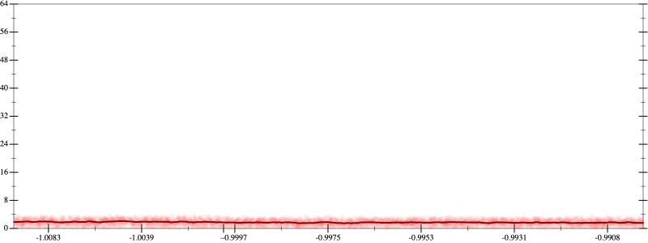
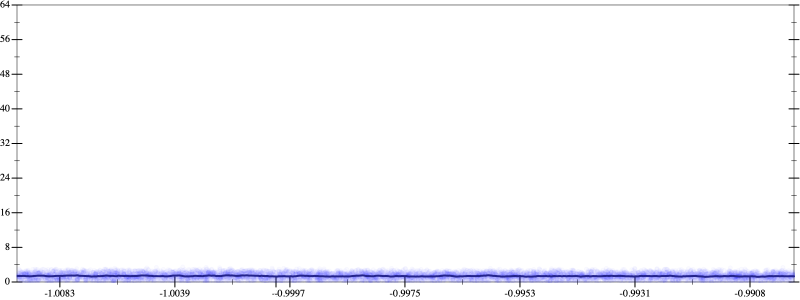
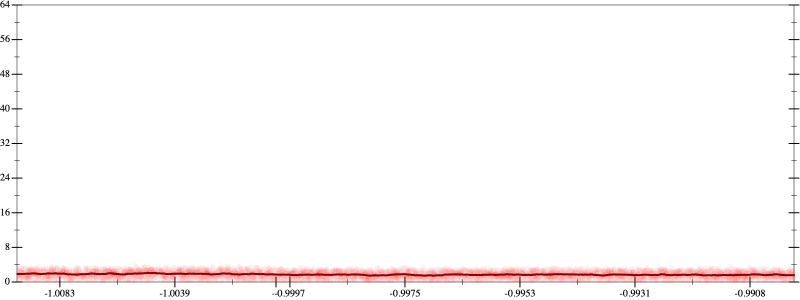
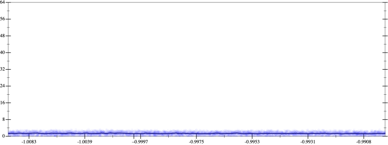

Initial program 1.7
\[\left(\left(\left(30240.0 \cdot x + -80640.0 \cdot \left(\left(x \cdot x\right) \cdot x\right)\right) + 48384.0 \cdot \left(\left(\left(\left(x \cdot x\right) \cdot x\right) \cdot x\right) \cdot x\right)\right) + -9216.0 \cdot \left(\left(\left(\left(\left(\left(x \cdot x\right) \cdot x\right) \cdot x\right) \cdot x\right) \cdot x\right) \cdot x\right)\right) + 512.0 \cdot \left(\left(\left(\left(\left(\left(\left(\left(x \cdot x\right) \cdot x\right) \cdot x\right) \cdot x\right) \cdot x\right) \cdot x\right) \cdot x\right) \cdot x\right)\]
- Using strategy
rm Applied associate-+l+1.7
\[\leadsto \left(\color{blue}{\left(30240.0 \cdot x + \left(-80640.0 \cdot \left(\left(x \cdot x\right) \cdot x\right) + 48384.0 \cdot \left(\left(\left(\left(x \cdot x\right) \cdot x\right) \cdot x\right) \cdot x\right)\right)\right)} + -9216.0 \cdot \left(\left(\left(\left(\left(\left(x \cdot x\right) \cdot x\right) \cdot x\right) \cdot x\right) \cdot x\right) \cdot x\right)\right) + 512.0 \cdot \left(\left(\left(\left(\left(\left(\left(\left(x \cdot x\right) \cdot x\right) \cdot x\right) \cdot x\right) \cdot x\right) \cdot x\right) \cdot x\right) \cdot x\right)\]
Applied simplify1.6
\[\leadsto \left(\left(30240.0 \cdot x + \color{blue}{\left(\left(48384.0 \cdot x\right) \cdot \left(x \cdot x\right) + -80640.0 \cdot x\right) \cdot \left(x \cdot x\right)}\right) + -9216.0 \cdot \left(\left(\left(\left(\left(\left(x \cdot x\right) \cdot x\right) \cdot x\right) \cdot x\right) \cdot x\right) \cdot x\right)\right) + 512.0 \cdot \left(\left(\left(\left(\left(\left(\left(\left(x \cdot x\right) \cdot x\right) \cdot x\right) \cdot x\right) \cdot x\right) \cdot x\right) \cdot x\right) \cdot x\right)\]
- Using strategy
rm Applied add-cbrt-cube1.6
\[\leadsto \left(\left(30240.0 \cdot x + \left(\left(48384.0 \cdot x\right) \cdot \left(x \cdot x\right) + -80640.0 \cdot x\right) \cdot \color{blue}{\sqrt[3]{\left(\left(x \cdot x\right) \cdot \left(x \cdot x\right)\right) \cdot \left(x \cdot x\right)}}\right) + -9216.0 \cdot \left(\left(\left(\left(\left(\left(x \cdot x\right) \cdot x\right) \cdot x\right) \cdot x\right) \cdot x\right) \cdot x\right)\right) + 512.0 \cdot \left(\left(\left(\left(\left(\left(\left(\left(x \cdot x\right) \cdot x\right) \cdot x\right) \cdot x\right) \cdot x\right) \cdot x\right) \cdot x\right) \cdot x\right)\]
Applied add-cbrt-cube1.6
\[\leadsto \left(\left(30240.0 \cdot x + \color{blue}{\sqrt[3]{\left(\left(\left(48384.0 \cdot x\right) \cdot \left(x \cdot x\right) + -80640.0 \cdot x\right) \cdot \left(\left(48384.0 \cdot x\right) \cdot \left(x \cdot x\right) + -80640.0 \cdot x\right)\right) \cdot \left(\left(48384.0 \cdot x\right) \cdot \left(x \cdot x\right) + -80640.0 \cdot x\right)}} \cdot \sqrt[3]{\left(\left(x \cdot x\right) \cdot \left(x \cdot x\right)\right) \cdot \left(x \cdot x\right)}\right) + -9216.0 \cdot \left(\left(\left(\left(\left(\left(x \cdot x\right) \cdot x\right) \cdot x\right) \cdot x\right) \cdot x\right) \cdot x\right)\right) + 512.0 \cdot \left(\left(\left(\left(\left(\left(\left(\left(x \cdot x\right) \cdot x\right) \cdot x\right) \cdot x\right) \cdot x\right) \cdot x\right) \cdot x\right) \cdot x\right)\]
Applied cbrt-unprod1.6
\[\leadsto \left(\left(30240.0 \cdot x + \color{blue}{\sqrt[3]{\left(\left(\left(\left(48384.0 \cdot x\right) \cdot \left(x \cdot x\right) + -80640.0 \cdot x\right) \cdot \left(\left(48384.0 \cdot x\right) \cdot \left(x \cdot x\right) + -80640.0 \cdot x\right)\right) \cdot \left(\left(48384.0 \cdot x\right) \cdot \left(x \cdot x\right) + -80640.0 \cdot x\right)\right) \cdot \left(\left(\left(x \cdot x\right) \cdot \left(x \cdot x\right)\right) \cdot \left(x \cdot x\right)\right)}}\right) + -9216.0 \cdot \left(\left(\left(\left(\left(\left(x \cdot x\right) \cdot x\right) \cdot x\right) \cdot x\right) \cdot x\right) \cdot x\right)\right) + 512.0 \cdot \left(\left(\left(\left(\left(\left(\left(\left(x \cdot x\right) \cdot x\right) \cdot x\right) \cdot x\right) \cdot x\right) \cdot x\right) \cdot x\right) \cdot x\right)\]
Applied simplify1.4
\[\leadsto \left(\left(30240.0 \cdot x + \sqrt[3]{\color{blue}{\left(\left(\left({x}^{3} \cdot {x}^{3}\right) \cdot x\right) \cdot \left(-80640.0 + \left(48384.0 \cdot x\right) \cdot x\right)\right) \cdot \left(\left(\left(48384.0 \cdot x\right) \cdot \left(x \cdot x\right) + -80640.0 \cdot x\right) \cdot \left(\left(48384.0 \cdot x\right) \cdot \left(x \cdot x\right) + -80640.0 \cdot x\right)\right)}}\right) + -9216.0 \cdot \left(\left(\left(\left(\left(\left(x \cdot x\right) \cdot x\right) \cdot x\right) \cdot x\right) \cdot x\right) \cdot x\right)\right) + 512.0 \cdot \left(\left(\left(\left(\left(\left(\left(\left(x \cdot x\right) \cdot x\right) \cdot x\right) \cdot x\right) \cdot x\right) \cdot x\right) \cdot x\right) \cdot x\right)\]
- Using strategy
rm Applied add-exp-log1.4
\[\leadsto \left(\color{blue}{e^{\log \left(30240.0 \cdot x + \sqrt[3]{\left(\left(\left({x}^{3} \cdot {x}^{3}\right) \cdot x\right) \cdot \left(-80640.0 + \left(48384.0 \cdot x\right) \cdot x\right)\right) \cdot \left(\left(\left(48384.0 \cdot x\right) \cdot \left(x \cdot x\right) + -80640.0 \cdot x\right) \cdot \left(\left(48384.0 \cdot x\right) \cdot \left(x \cdot x\right) + -80640.0 \cdot x\right)\right)}\right)}} + -9216.0 \cdot \left(\left(\left(\left(\left(\left(x \cdot x\right) \cdot x\right) \cdot x\right) \cdot x\right) \cdot x\right) \cdot x\right)\right) + 512.0 \cdot \left(\left(\left(\left(\left(\left(\left(\left(x \cdot x\right) \cdot x\right) \cdot x\right) \cdot x\right) \cdot x\right) \cdot x\right) \cdot x\right) \cdot x\right)\]
- Using strategy
rm Applied flip3-+1.4
\[\leadsto \left(e^{\log \color{blue}{\left(\frac{{\left(30240.0 \cdot x\right)}^{3} + {\left(\sqrt[3]{\left(\left(\left({x}^{3} \cdot {x}^{3}\right) \cdot x\right) \cdot \left(-80640.0 + \left(48384.0 \cdot x\right) \cdot x\right)\right) \cdot \left(\left(\left(48384.0 \cdot x\right) \cdot \left(x \cdot x\right) + -80640.0 \cdot x\right) \cdot \left(\left(48384.0 \cdot x\right) \cdot \left(x \cdot x\right) + -80640.0 \cdot x\right)\right)}\right)}^{3}}{\left(30240.0 \cdot x\right) \cdot \left(30240.0 \cdot x\right) + \left(\sqrt[3]{\left(\left(\left({x}^{3} \cdot {x}^{3}\right) \cdot x\right) \cdot \left(-80640.0 + \left(48384.0 \cdot x\right) \cdot x\right)\right) \cdot \left(\left(\left(48384.0 \cdot x\right) \cdot \left(x \cdot x\right) + -80640.0 \cdot x\right) \cdot \left(\left(48384.0 \cdot x\right) \cdot \left(x \cdot x\right) + -80640.0 \cdot x\right)\right)} \cdot \sqrt[3]{\left(\left(\left({x}^{3} \cdot {x}^{3}\right) \cdot x\right) \cdot \left(-80640.0 + \left(48384.0 \cdot x\right) \cdot x\right)\right) \cdot \left(\left(\left(48384.0 \cdot x\right) \cdot \left(x \cdot x\right) + -80640.0 \cdot x\right) \cdot \left(\left(48384.0 \cdot x\right) \cdot \left(x \cdot x\right) + -80640.0 \cdot x\right)\right)} - \left(30240.0 \cdot x\right) \cdot \sqrt[3]{\left(\left(\left({x}^{3} \cdot {x}^{3}\right) \cdot x\right) \cdot \left(-80640.0 + \left(48384.0 \cdot x\right) \cdot x\right)\right) \cdot \left(\left(\left(48384.0 \cdot x\right) \cdot \left(x \cdot x\right) + -80640.0 \cdot x\right) \cdot \left(\left(48384.0 \cdot x\right) \cdot \left(x \cdot x\right) + -80640.0 \cdot x\right)\right)}\right)}\right)}} + -9216.0 \cdot \left(\left(\left(\left(\left(\left(x \cdot x\right) \cdot x\right) \cdot x\right) \cdot x\right) \cdot x\right) \cdot x\right)\right) + 512.0 \cdot \left(\left(\left(\left(\left(\left(\left(\left(x \cdot x\right) \cdot x\right) \cdot x\right) \cdot x\right) \cdot x\right) \cdot x\right) \cdot x\right) \cdot x\right)\]
Applied log-div1.6
\[\leadsto \left(e^{\color{blue}{\log \left({\left(30240.0 \cdot x\right)}^{3} + {\left(\sqrt[3]{\left(\left(\left({x}^{3} \cdot {x}^{3}\right) \cdot x\right) \cdot \left(-80640.0 + \left(48384.0 \cdot x\right) \cdot x\right)\right) \cdot \left(\left(\left(48384.0 \cdot x\right) \cdot \left(x \cdot x\right) + -80640.0 \cdot x\right) \cdot \left(\left(48384.0 \cdot x\right) \cdot \left(x \cdot x\right) + -80640.0 \cdot x\right)\right)}\right)}^{3}\right) - \log \left(\left(30240.0 \cdot x\right) \cdot \left(30240.0 \cdot x\right) + \left(\sqrt[3]{\left(\left(\left({x}^{3} \cdot {x}^{3}\right) \cdot x\right) \cdot \left(-80640.0 + \left(48384.0 \cdot x\right) \cdot x\right)\right) \cdot \left(\left(\left(48384.0 \cdot x\right) \cdot \left(x \cdot x\right) + -80640.0 \cdot x\right) \cdot \left(\left(48384.0 \cdot x\right) \cdot \left(x \cdot x\right) + -80640.0 \cdot x\right)\right)} \cdot \sqrt[3]{\left(\left(\left({x}^{3} \cdot {x}^{3}\right) \cdot x\right) \cdot \left(-80640.0 + \left(48384.0 \cdot x\right) \cdot x\right)\right) \cdot \left(\left(\left(48384.0 \cdot x\right) \cdot \left(x \cdot x\right) + -80640.0 \cdot x\right) \cdot \left(\left(48384.0 \cdot x\right) \cdot \left(x \cdot x\right) + -80640.0 \cdot x\right)\right)} - \left(30240.0 \cdot x\right) \cdot \sqrt[3]{\left(\left(\left({x}^{3} \cdot {x}^{3}\right) \cdot x\right) \cdot \left(-80640.0 + \left(48384.0 \cdot x\right) \cdot x\right)\right) \cdot \left(\left(\left(48384.0 \cdot x\right) \cdot \left(x \cdot x\right) + -80640.0 \cdot x\right) \cdot \left(\left(48384.0 \cdot x\right) \cdot \left(x \cdot x\right) + -80640.0 \cdot x\right)\right)}\right)\right)}} + -9216.0 \cdot \left(\left(\left(\left(\left(\left(x \cdot x\right) \cdot x\right) \cdot x\right) \cdot x\right) \cdot x\right) \cdot x\right)\right) + 512.0 \cdot \left(\left(\left(\left(\left(\left(\left(\left(x \cdot x\right) \cdot x\right) \cdot x\right) \cdot x\right) \cdot x\right) \cdot x\right) \cdot x\right) \cdot x\right)\]
Applied exp-diff1.6
\[\leadsto \left(\color{blue}{\frac{e^{\log \left({\left(30240.0 \cdot x\right)}^{3} + {\left(\sqrt[3]{\left(\left(\left({x}^{3} \cdot {x}^{3}\right) \cdot x\right) \cdot \left(-80640.0 + \left(48384.0 \cdot x\right) \cdot x\right)\right) \cdot \left(\left(\left(48384.0 \cdot x\right) \cdot \left(x \cdot x\right) + -80640.0 \cdot x\right) \cdot \left(\left(48384.0 \cdot x\right) \cdot \left(x \cdot x\right) + -80640.0 \cdot x\right)\right)}\right)}^{3}\right)}}{e^{\log \left(\left(30240.0 \cdot x\right) \cdot \left(30240.0 \cdot x\right) + \left(\sqrt[3]{\left(\left(\left({x}^{3} \cdot {x}^{3}\right) \cdot x\right) \cdot \left(-80640.0 + \left(48384.0 \cdot x\right) \cdot x\right)\right) \cdot \left(\left(\left(48384.0 \cdot x\right) \cdot \left(x \cdot x\right) + -80640.0 \cdot x\right) \cdot \left(\left(48384.0 \cdot x\right) \cdot \left(x \cdot x\right) + -80640.0 \cdot x\right)\right)} \cdot \sqrt[3]{\left(\left(\left({x}^{3} \cdot {x}^{3}\right) \cdot x\right) \cdot \left(-80640.0 + \left(48384.0 \cdot x\right) \cdot x\right)\right) \cdot \left(\left(\left(48384.0 \cdot x\right) \cdot \left(x \cdot x\right) + -80640.0 \cdot x\right) \cdot \left(\left(48384.0 \cdot x\right) \cdot \left(x \cdot x\right) + -80640.0 \cdot x\right)\right)} - \left(30240.0 \cdot x\right) \cdot \sqrt[3]{\left(\left(\left({x}^{3} \cdot {x}^{3}\right) \cdot x\right) \cdot \left(-80640.0 + \left(48384.0 \cdot x\right) \cdot x\right)\right) \cdot \left(\left(\left(48384.0 \cdot x\right) \cdot \left(x \cdot x\right) + -80640.0 \cdot x\right) \cdot \left(\left(48384.0 \cdot x\right) \cdot \left(x \cdot x\right) + -80640.0 \cdot x\right)\right)}\right)\right)}}} + -9216.0 \cdot \left(\left(\left(\left(\left(\left(x \cdot x\right) \cdot x\right) \cdot x\right) \cdot x\right) \cdot x\right) \cdot x\right)\right) + 512.0 \cdot \left(\left(\left(\left(\left(\left(\left(\left(x \cdot x\right) \cdot x\right) \cdot x\right) \cdot x\right) \cdot x\right) \cdot x\right) \cdot x\right) \cdot x\right)\]
Applied simplify1.5
\[\leadsto \left(\frac{\color{blue}{{\left(30240.0 \cdot x\right)}^{3} + \left(\left(\left(48384.0 \cdot x\right) \cdot x + -80640.0\right) \cdot \left({\left(x \cdot x\right)}^{3} \cdot x\right)\right) \cdot \left(\left(x \cdot -80640.0 + \left(48384.0 \cdot x\right) \cdot \left(x \cdot x\right)\right) \cdot \left(x \cdot -80640.0 + \left(48384.0 \cdot x\right) \cdot \left(x \cdot x\right)\right)\right)}}{e^{\log \left(\left(30240.0 \cdot x\right) \cdot \left(30240.0 \cdot x\right) + \left(\sqrt[3]{\left(\left(\left({x}^{3} \cdot {x}^{3}\right) \cdot x\right) \cdot \left(-80640.0 + \left(48384.0 \cdot x\right) \cdot x\right)\right) \cdot \left(\left(\left(48384.0 \cdot x\right) \cdot \left(x \cdot x\right) + -80640.0 \cdot x\right) \cdot \left(\left(48384.0 \cdot x\right) \cdot \left(x \cdot x\right) + -80640.0 \cdot x\right)\right)} \cdot \sqrt[3]{\left(\left(\left({x}^{3} \cdot {x}^{3}\right) \cdot x\right) \cdot \left(-80640.0 + \left(48384.0 \cdot x\right) \cdot x\right)\right) \cdot \left(\left(\left(48384.0 \cdot x\right) \cdot \left(x \cdot x\right) + -80640.0 \cdot x\right) \cdot \left(\left(48384.0 \cdot x\right) \cdot \left(x \cdot x\right) + -80640.0 \cdot x\right)\right)} - \left(30240.0 \cdot x\right) \cdot \sqrt[3]{\left(\left(\left({x}^{3} \cdot {x}^{3}\right) \cdot x\right) \cdot \left(-80640.0 + \left(48384.0 \cdot x\right) \cdot x\right)\right) \cdot \left(\left(\left(48384.0 \cdot x\right) \cdot \left(x \cdot x\right) + -80640.0 \cdot x\right) \cdot \left(\left(48384.0 \cdot x\right) \cdot \left(x \cdot x\right) + -80640.0 \cdot x\right)\right)}\right)\right)}} + -9216.0 \cdot \left(\left(\left(\left(\left(\left(x \cdot x\right) \cdot x\right) \cdot x\right) \cdot x\right) \cdot x\right) \cdot x\right)\right) + 512.0 \cdot \left(\left(\left(\left(\left(\left(\left(\left(x \cdot x\right) \cdot x\right) \cdot x\right) \cdot x\right) \cdot x\right) \cdot x\right) \cdot x\right) \cdot x\right)\]
Applied simplify1.4
\[\leadsto \left(\frac{{\left(30240.0 \cdot x\right)}^{3} + \left(\left(\left(48384.0 \cdot x\right) \cdot x + -80640.0\right) \cdot \left({\left(x \cdot x\right)}^{3} \cdot x\right)\right) \cdot \left(\left(x \cdot -80640.0 + \left(48384.0 \cdot x\right) \cdot \left(x \cdot x\right)\right) \cdot \left(x \cdot -80640.0 + \left(48384.0 \cdot x\right) \cdot \left(x \cdot x\right)\right)\right)}{\color{blue}{\sqrt[3]{\left(\left(\left(48384.0 \cdot x\right) \cdot x + -80640.0\right) \cdot \left({\left(x \cdot x\right)}^{3} \cdot x\right)\right) \cdot \left(\left(x \cdot -80640.0 + \left(48384.0 \cdot x\right) \cdot \left(x \cdot x\right)\right) \cdot \left(x \cdot -80640.0 + \left(48384.0 \cdot x\right) \cdot \left(x \cdot x\right)\right)\right)} \cdot \left(\sqrt[3]{\left(\left(\left(48384.0 \cdot x\right) \cdot x + -80640.0\right) \cdot \left({\left(x \cdot x\right)}^{3} \cdot x\right)\right) \cdot \left(\left(x \cdot -80640.0 + \left(48384.0 \cdot x\right) \cdot \left(x \cdot x\right)\right) \cdot \left(x \cdot -80640.0 + \left(48384.0 \cdot x\right) \cdot \left(x \cdot x\right)\right)\right)} - 30240.0 \cdot x\right) + \left(30240.0 \cdot x\right) \cdot \left(30240.0 \cdot x\right)}} + -9216.0 \cdot \left(\left(\left(\left(\left(\left(x \cdot x\right) \cdot x\right) \cdot x\right) \cdot x\right) \cdot x\right) \cdot x\right)\right) + 512.0 \cdot \left(\left(\left(\left(\left(\left(\left(\left(x \cdot x\right) \cdot x\right) \cdot x\right) \cdot x\right) \cdot x\right) \cdot x\right) \cdot x\right) \cdot x\right)\]
 
